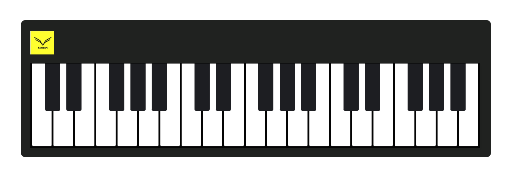

Welcome to my repository! I’m passionate about turning ideas into
projects. My certifications show my skills, but I love learning and
taking on new challenges. I often learn from YouTube and various
websites, using that knowledge to create and build projects. Join me
as I explore, create, and inspire, one project at a time.
After months of diving into various resources, I had a breakthrough
moment! I realized that most of my projects are inspired by the
incredible lessons from freeCodeCamp and other websites. In just six
months, I’ve transformed my skills and created numerous projects.
It wasn’t a dramatic revelation like Doc’s in Back to the Future. I
was always interested in web development and kept pursuing it. The
realization: continuous learning is key. I dove into resources from
freeCodeCamp, Apna College, and Bro Code on YouTube. Through these, I
completed numerous hands-on projects, all of which you can explore in
my GitHub repository. Each project taught me something new and pushed
my skills further.
Believe in yourself and all that you are.
Talking about learning.. No more walls of explanatory text. No more
walls of tests. Just one test at a time, as you build up a working
project. Over the course of passing thousands of tests, you build up
projects and your own understanding of coding fundamentals. There is
no transition between lessons and projects, because the lessons
themselves are baked into projects. And there's plenty of repetition
to help you retain everything because - hey - building projects in
real life has plenty of repetition.
The main design challenge is taking what is currently paragraphs of
explanation and instructions and packing them into a single test
description text. Each project will involve dozens of tests like this.
People will be coding the entire time, rather than switching back and
forth from "reading mode" to "coding mode".
Instead of a series of coding challenges, people will be in their code
editor passing one test after another, quickly building up a project.
People will get into a real flow state, similar to what they
experience when they build the required projects at the end of each
certification.You get that sense of forward progress right from the
beginning.It was fun.....
Each project in this repository is a testament to the power of
continuous learning and hands-on practice. From cloning the Amazon
website to creating a functional calculator, every project has taught
me valuable lessons in web development.
This repository showcases my journey in mastering HTML and CSS. HTML,
the backbone of web content, ensures that every element is structured and
accessible. CSS, the design language, brings these elements to life with
style and responsiveness.
Web development is not just about writing code; it’s about solving
problems and creating user-friendly experiences. For example, the
Balance Sheet project helped me understand the importance of clean and
organized code, while the Digital-Clock project enhanced my JavaScript
skills.

Piano project
When diving into these projects, focus on understanding the
fundamentals. Each project is designed to reinforce key concepts,
whether it’s HTML, CSS, or most importantly JavaScript. The repetition
you encounter is intentional, as it helps solidify and improve your
understanding and build muscle memory.
One of the main challenges in web development is transitioning from
learning to building. This repository bridges that gap by integrating
lessons directly into projects. You’ll find that coding becomes more
intuitive and fun as you apply what you’ve learned in real-world
scenarios.
Instead of isolated coding challenges, you’ll be working on
comprehensive projects that simulate real development tasks. This
approach not only enhances your coding skills but also prepares you
for the workflow you’ll encounter in professional environments.
Embrace the process, stay curious, and you’ll see significant progress
in your abilities and confidence as a developer.